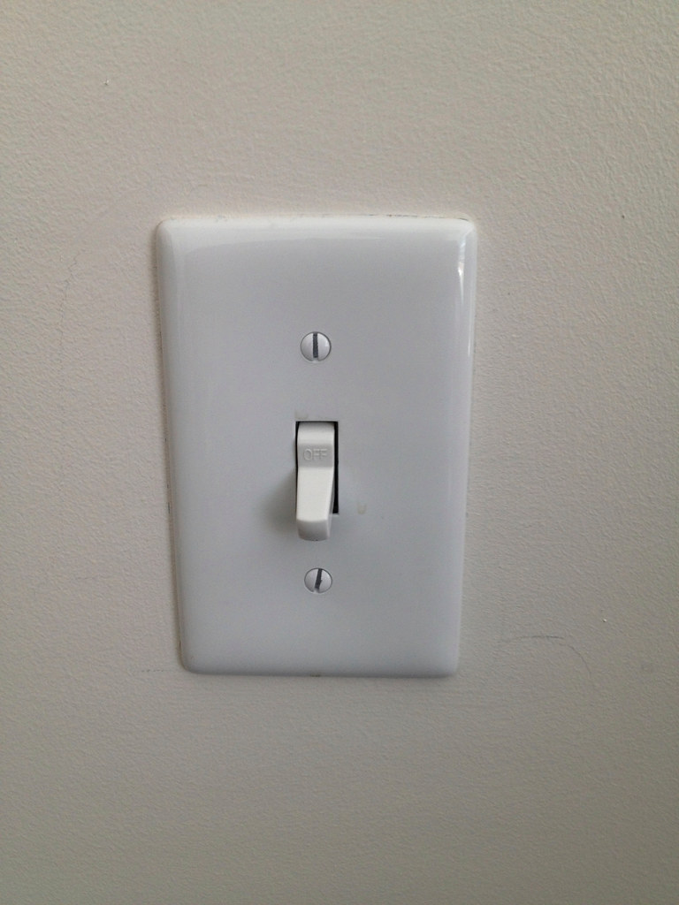

Light switches are what illuminates a home, some what argue that lights and bulbs are what serve this purpose but what controls the light is the switch. A switch is an electrical device that is utilized to operate electrical appliances by providing them with the desired power that is necessary to run a specific appliance. When you ‘switch on’ an appliance, the electrical circuit is completed, and the product starts receiving electrical supply.
Want to learn how to replace your light switches in your own home?
